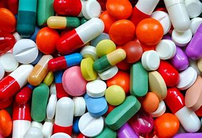

drogas estimulantes mas comunes
-
Cocaina
Así, se trata de una droga que excita o estimula el sistema nervioso central (SNC), a través de un mecanismo de acción que consiste en aumentar los niveles de dopamina, serotonina y noradrenalina en el cerebro.
-

Anfetaminas
Las anfetaminas, al igual que la cocaína, son compuestos con efectos reforzantes y estimulantes para el cerebro y el organismo.
Estos son los daños que puede causar el consumo de estas drogas
- aumento de nivel de azucar en la sangre
- Fatiga
- disminucion de la circulacion sanguinea
- aumento de la presión arterial y la frecuencia cardíaca
- Dilatacion de las vias respiratorias
- depresion
- aumento de la frecuencia respiratoria
- problemas para dormir
¿Que son las drogas estimulantes?
Las drogas son sustancias adictivas que pueden generar una gran dependencia en la persona que las consume.
Las drogas son sustancias que, al introducirse en el organismo, actúan sobre el sistema nervioso central (SNC), alterando o modificando su funcionamiento.
Se trata de sustancias que fácilmente pueden provocar diferentes alteraciones psicológicas, tales como el trastorno por consumo (donde el consumo de la droga es excesivo, interfiriendo en el funcionamiento habitual de la persona) y dos tipos de trastornos inducidos por la propia sustancia; la intoxicación y la abstinencia (síndrome de abstinencia).
Las drogas estimulantes son un tipo de drogas que, como su propio nombre indica, estimulan la actividad del sistema nervioso central (SNC); es decir, son drogas excitatorias que intensifican la actividad cerebral.
Por otro lado, entre los efectos de las drogas estimulantes encontramos una mayor agudeza de la mente, así como el incremento de la energía y la atención, junto con un aumento de la presión arterial y de la velocidad de la respiración y del corazón.
En cuanto a su mecanismo de acción, las drogas estimulantes aumentan los niveles de tres tipos de neurotransmisores cerebrales: la dopamina, la serotonina y la noradrenalina (todos ellos monoaminas).